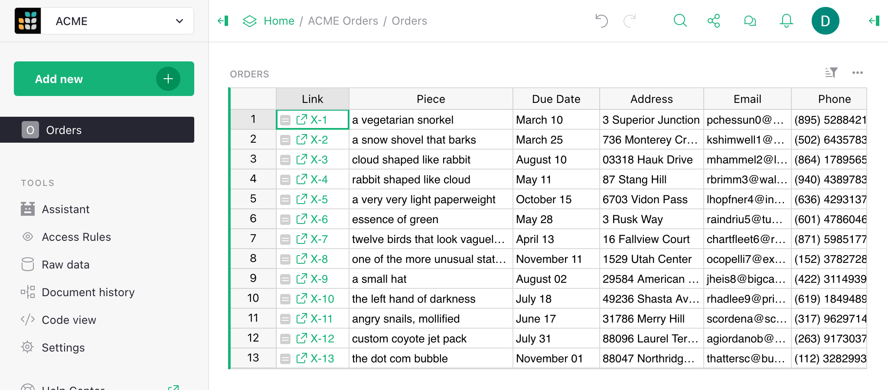

Warning
La traduction proposée ici a été générée automatiquement par le modèle d’intelligence artificielle GPT-4o. Il est probable qu’elle contienne des imperfections.
Mais la bonne nouvelle est que vous pouvez rejoindre la communauté de traduction pour améliorer le contenu fourni ici 👋.
Règles d’accès#
Chaque document Grist peut être partagé avec d’autres
en utilisant l’option Gérer les utilisateurs dans le menu de partage
().
Les utilisateurs peuvent être invités en tant que Visiteurs, Éditeurs ou Propriétaires (voir
Partage d’un document pour un rappel sur ces rôles), ou un document peut être partagé publiquement avec des permissions de lecture ou d’édition.
Parfois, vous avez besoin de plus de nuances sur qui peut voir ou éditer des
parties individuelles d’un document. Les règles d’accès nous donnent ce pouvoir.
Seuls les propriétaires d’un document peuvent modifier ses règles d’accès.
Lorsqu’un document est chargé, les propriétaires voient un outil appelé
dans la barre latérale gauche. Cliquez dessus pour voir et modifier
les règles d’accès. Les règles sont également accessibles via l’option Gérer les utilisateurs
du menu de partage
avec le bouton Ouvrir les règles d'accès (disponible uniquement pour les Propriétaires du document).
Supposons que nous gérons une petite entreprise de sourcing et de livraison d’objets inhabituels,
organisée à l’aide d’un document avec deux tables, Commandes et Finances.
Nous prenons maintenant plus d’employés et voulons partager le document avec eux tout en
limitant leur accès à ce dont ils ont besoin.

Règles par défaut#
Pour voir les règles d’accès d’un document, visitez sa page de règles d’accès en
cliquant sur
dans la barre latérale gauche. Lorsque aucune règle personnalisée n’a encore été créée,
la page des règles d’accès contient les Règles par défaut pour notre document :

Ces règles disent, en résumé, que les Propriétaires et Éditeurs peuvent faire tout ce qu’ils veulent dans le document, que les Visiteurs ne peuvent que lire le document, et que tout le monde d’autre est interdit d’accès. Ces règles ne peuvent pas être modifiées, mais elles peuvent être remplacées. Pour comprendre si un groupe de règles permet une certaines permissions (Lire, Mettre à jour, Créer, Supprimer ou Structure), lisez les règles de haut en bas, et trouvez la première règle applicable qui permet (vert) ou refuse (rouge) cette permission. Nous verrons de nombreux exemples au fur et à mesure.
Verrouiller la structure#
Par défaut, les Propriétaires et Éditeurs ont le même pouvoir dans un document, avec la capacité de créer ou de supprimer des tables ou des colonnes, d’écrire des formules, de réorganiser des pages, et ainsi de suite.
Supposons que nous voulons que seuls les Propriétaires d’origine du document soient autorisés à modifier sa structure, car nous prévoyons d’inviter d’autres collaborateurs spécialisés en tant qu’Éditeurs. Pour ce faire, décochez la case de la première règle listée sous ‘Règles avancées’ pour interdire aux éditeurs de modifier la structure.

Une fois que nous avons apporté des modifications, le bouton ENREGISTRER devient vert et invitant. Nous
cliquons sur ENREGISTRER pour que la règle prenne effet.
Important. C’est une première étape importante pour tout document où vous avez l’intention de bloquer tout accès aux Éditeurs.
Sans leur refuser la permission de structure (S), quiconque ayant accès à l’édition pourra
créer ou modifier des formules. Étant donné que les calculs de formules ne sont pas limités par les règles de contrôle d’accès,
un utilisateur déterminé pourrait les utiliser pour récupérer des données de n’importe quel document. Pour se protéger contre
cela, refusez la permission de structure aux utilisateurs dont l’accès doit être limité.
Créer une table privée#
Pour garantir que seuls les Propriétaires peuvent accéder à une table, comme la table Finances dans notre exemple,
nous cliquons sur Ajouter des règles de table et sélectionnons le nom de la table, Finances. Cela crée un nouveau groupe de règles vide appelé Règles pour la table Finances.
Ensuite, nous ajoutons une condition pour tout utilisateur qui n’est pas un Propriétaire (user.Access != OWNER), avec toutes
les permissions refusées. Sélectionner Refuser tout dans le menu déroulant à côté de R U C D est un moyen rapide
de définir toutes les permissions sur refusées, ou vous pouvez cliquer sur chaque permission individuellement pour les mettre en rouge. R est Lire, U est Mettre à jour, C est Créer, et D est Supprimer
(voir Permissions de règle d’accès).
Les permissions de structure (S) ne sont pas disponibles au niveau de la table.
Une fois que vous avez terminé, cliquez sur ENREGISTRER.

Maintenant, nous pourrions aller de l’avant et partager le document avec un membre de l’équipe
spécialisé dans les livraisons, par exemple. Nous partageons le
document avec eux en tant qu’Éditeur afin que les restrictions
que nous avons mises en place s’appliquent à eux. Ils ne verront pas la table Finances dans la
barre latérale gauche, et les tentatives de l’ouvrir seront refusées :

Règles par défaut#
Lors de l’écriture des règles d’accès pour des tables spécifiques, il est assez courant de répéter la même règle dans de nombreuses tables —
par exemple, toujours accorder aux propriétaires des permissions de lecture et d’écriture complètes. Pour ajouter automatiquement un ensemble de règles à toutes
les nouvelles règles de table, vous pouvez écrire des “règles par défaut”. Il y a une case à cocher au-dessus des règles par défaut qui facilite le cas commun
avec un seul clic. Cliquez dessus pour écrire une règle par défaut qui accordera automatiquement aux propriétaires un accès complet
chaque fois que des règles de table sont ajoutées. Cliquez sur l’icône > pour déplier la table des règles par défaut afin de modifier les règles par défaut.

Restreindre l’accès aux colonnes#
Nous pouvons restreindre l’accès d’un collaborateur aux colonnes. Dans notre exemple, nous pourrions
souhaiter donner à un spécialiste des livraisons un accès plus limité à
la table Commandes. Peut-être qu’ils n’ont pas besoin de voir une colonne Email,
ou une colonne Pièce avec des détails sur ce qu’il y a dans le colis.
Cliquez sur Ajouter des règles de table et sélectionnez Commandes pour créer un groupe de règles pour la table Commandes.
Maintenant, dans le groupe Règles pour la table Commandes, cliquez sur l’icône à trois points (…), et
sélectionnez Ajouter une règle de colonne :

Dans la zone Colonnes, nous avons un nouveau menu déroulant [Ajouter une colonne] pour ajouter toutes les colonnes
auxquelles nous voulons que la règle s’applique (dans notre cas Email et Pièce).
Pour la condition, nous pourrions utiliser user.Email == 'kiwi@getgrist.com'. Cela vérifie
l’adresse e-mail de Kimberly, notre spécialiste des livraisons fictif ; nous
pourrions également vérifier par nom ou par un ID numérique. Nous désactivons toutes les permissions disponibles pour
cet utilisateur sur ces colonnes :

Maintenant que les règles sont prêtes, cliquez sur Enregistrer.
Si nous avons un autre employé qui se spécialise dans le sourcing d’objets, et qui a besoin de
voir un ensemble différent de colonnes, nous pouvons le faire. Par exemple ici, nous ajoutons une
règle pour retirer les colonnes Adresse et Téléphone de l’utilisateur Charon :

Voir en tant qu’autre utilisateur#
Un moyen pratique de vérifier si les règles d’accès fonctionnent comme prévu est la fonction Voir en tant que,
disponible dans le menu déroulant Voir en tant que. Cela permet à un Propriétaire
d’ouvrir le document comme s’il était l’une des personnes avec qui il est partagé,
pour voir ce que son collègue verrait. Le Propriétaire ne
“deviendra” pas ce collègue - tout changement qu’il effectue sera enregistré comme
provenant de lui-même et non du collègue - mais il voit le
document du point de vue du collègue.

Dans notre exemple, nous pourrions sélectionner Kiwi, et le
document se rouvre, avec une grande bannière indiquant que nous le visualisons
comme Kiwi. Les colonnes Pièce et Email sont manquantes,
et la table Finances est supprimée :

Vous pouvez également vérifier dans les Données sources pour confirmer que seules les tables, colonnes et lignes attendues sont exposées.

Lorsque vous êtes satisfait que tout semble comme prévu, cliquez sur le bouton vert Voir en tant que vous-même
pour fermer cet aperçu, et le document se rechargera.
Tables d’attributs d’utilisateur#
Si nous réussissons et embauchons de nombreuses personnes pour le sourcing et la livraison,
ajouter chacune d’elles une par une aux règles serait fastidieux. Une solution
est d’utiliser des “tables d’attributs d’utilisateur.” Vous pouvez ajouter une table à votre document
qui classe les utilisateurs comme vous le souhaitez, puis utiliser ces classes dans vos
règles d’accès. Par exemple, nous pouvons créer une table appelée Équipe, et lui donner deux
colonnes, Email et Rôle, où Rôle est un choix entre
Sourcing et Livraison.

Maintenant, nous pouvons dire à Grist de rendre les informations de cette table disponibles
pour les règles d’accès, en cliquant sur Ajouter des attributs d'utilisateur.
Donnez à l’attribut n’importe quel nom que vous aimez (c’est ainsi que nous nous y référerons
dans les formules), comme Équipe. Choisissez la table à lire (Équipe également
dans ce cas). Donnez une propriété utilisateur à comparer
avec les lignes de cette table - dans notre cas, nous utiliserons user.Email. Et la
colonne à comparer, Email.

Enregistrez cela. Maintenant, nous pouvons mettre à jour nos règles pour être plus générales. Nous découvrons avec
l’autocomplétion que nous avons une nouvelle variable user.Team disponible dans
les conditions. Cela rend les colonnes de l’Équipe disponibles, comme user.Team.Role.
Maintenant, nous pouvons vérifier si l’utilisateur a un rôle particulier et appliquer les permissions
qui y sont associées :

Super ! En faisant un contrôle aléatoire, Charon voit les colonnes attendues pour quelqu’un dans
le Sourcing. Et si nous recrutons quelqu’un d’autre pour travailler avec eux, nous pouvons simplement les ajouter
dans la table Équipe, sans besoin de modifier les règles.

Contrôle d’accès au niveau des lignes#
Dans notre exemple, à mesure que les commandes sont traitées, elles passent des phases de sourcing aux phases de livraison.
Il n’est donc vraiment pas nécessaire que les deux groupes voient toutes les commandes en même temps. Ajoutons une
colonne appelée Étape qui peut être définie sur Sourcing ou Livraison, afin que nous
puissions mettre à jour les règles d’accès pour ne montrer que les commandes pertinentes.

Dans le groupe Règles pour la table Commandes, cliquez sur l’icône à trois points (…), et
sélectionnez Ajouter une règle à l'échelle de la table pour ajouter une règle qui n’est pas limitée à des colonnes spécifiques.
Commençons par refuser l’accès à toutes les lignes pour les non-Propriétaires, puis ajoutons à nouveau celles que nous voulons. Nous pouvons le faire avec la condition user.Access != OWNER avec
des permissions Refuser tout. Ensuite, nous ajoutons une autre règle par défaut en cliquant sur +, et
ajoutons la condition user.Team.Role == rec.Stage. La variable rec nous permet d’exprimer
des règles qui dépendent du contenu d’un enregistrement particulier.
Ici, nous vérifions si la colonne Étape d’un enregistrement correspond au rôle de l’utilisateur.
Si c’est le cas, nous autorisons l’accès R Lecture :

Voici à quoi ressemble la table maintenant pour Kimberly (effectuant des livraisons) :

Et voici à quoi ressemble la table pour Charon (effectuant du sourcing) :

Kimberly et Charon ont maintenant un accès en lecture seule à la table. Les Propriétaires ont toujours un accès complet en écriture à toutes les lignes et colonnes.
Comprendre les colonnes de référence dans les règles d’accès
Vous pouvez limiter les données auxquelles les membres de l’équipe ont accès à juste les lignes pertinentes pour leur travail. Une façon de le faire est de relier tous les enregistrements dans toutes les tables à leurs membres d’équipe respectifs. Par exemple, les pistes et les enregistrements de ventes peuvent faire référence au représentant commercial responsable de ces enregistrements. Cette vidéo rapide explique comment.
Vérification des nouvelles valeurs#
Les règles d’accès peuvent être utilisées pour permettre uniquement certains changements au document.
Supposons que nous voulons que les personnes de Livraison
puissent changer Étape de Livraison à Fait, sans leur donner les
droits arbitraires d’éditer cette colonne. Nous pouvons leur accorder ce droit exceptionnel
comme suit.
Dans le groupe Règles pour la table Commandes, cliquez sur l’icône à trois points (…), et
sélectionnez Ajouter une règle de colonne. Réglez [Ajouter une colonne] sur Étape, et marquez la permission U/Mise à jour
pour être accordée. Pour la condition, utilisez ceci :
(user.Team.Role == 'Livraison' and
rec.Stage == 'Livraison' and
newRec.Stage == 'Fait')
Cela vérifie si l’utilisateur a le rôle de Livraison, que l’enregistrement est à l’étape de Livraison,
et que l’utilisateur essaie de changer l’Étape en Fait. La variable newRec est une
variante de rec disponible lorsque l’utilisateur propose de changer un enregistrement, avec rec
contenant son état avant le changement, et newRec son état après le changement proposé.

Maintenant, si nous voyons la table comme Kiwi, et essayons de changer une Étape en Sourcing, nous sommes
refusés :

Si nous changeons une Étape en Fait, cela fonctionne, et l’enregistrement disparaît de la vue puisqu’il n’est plus dans l’étape de Livraison :

Clés de lien#
Parfois, il est utile de donner accès à une petite
partie spécifique du document, par exemple une seule ligne d’une table. Grist offre
une fonctionnalité appelée “clés de lien” qui peut aider avec cela. Tous les paramètres dans
une URL de document Grist qui se terminent par un underscore sont disponibles pour
les règles d’accès dans une variable user.LinkKey. Par exemple, si une URL de document
se termine par ....?Token_=xx-xx-xx-xx&Flavor_=vanilla, alors user.LinkKey.Token
sera défini sur xx-xx-xx-xx et user.LinkKey.Flavor sur vanilla.
Voyons un exemple pour voir comment cela peut être utile.
Supposons que nous avons une table de Commandes et que nous aimerions occasionnellement
partager des informations sur une seule commande avec quelqu’un. Pour ce faire avec
des clés de lien, nous avons besoin d’un code difficile à deviner pour chaque commande,
qui peut être utilisé pour y accéder. Grist a une fonction UUID() qui
donne un identifiant unique, aléatoire et difficile à deviner, donc ajoutons une colonne UUID avec
la formule =UUID() :

En fait, nous voulons que UUID() soit appelé une seule fois par commande, lorsque nous la créons,
et jamais recalculé (car sinon, elle changerait). Donc dans la barre latérale droite,
nous convertissons la colonne de formule en colonne de données, figeant ses valeurs :

Cela convertit notre formule en une formule d’initialisation. Nous définissons la formule pour s’appliquer aux nouveaux enregistrements :

À ce stade, nous avons un code solide et difficile à deviner pour chaque commande dans la
colonne UUID, qui sera créé à mesure que nous ajoutons de nouvelles commandes. Il peut
être pratique à ce stade de construire des liens vers le document avec ce
code intégré. Grist a un helper pour cela appelé
SELF_HYPERLINK. Pour ajouter une
clé de lien appelée <NOM>, utilisez simplement cette fonction avec un
argument LinkKey_<NOM>. Dans notre cas, nous passons LinkKey_UUID=$UUID pour
intégrer la valeur de la colonne UUID dans l’URL. Nous définissons également label=$Ref
pour contrôler le texte du lien dans la feuille de calcul. Pour afficher le lien,
nous définissons le type de colonne sur Texte et activons l’option HyperLink :

Une fois que nous avons ces liens, nous pouvons faire un peu de ménage en cachant les
colonnes UUID et Ref (voir Opérations sur les colonnes pour un rappel sur la façon
de le faire) :

Les liens ne font encore rien de spécial, mais nous avons maintenant tout ce dont nous avons besoin pour que cela se produise. Voici un exemple de règles d’accès pour permettre à quiconque ayant un UUID dans son URL de lire toute commande avec un UUID correspondant (sinon, seuls les propriétaires peuvent lire les commandes dans ce cas) :

Et voici ce qu’un non-propriétaire voit maintenant, avec l’UUID de la première commande dans son URL :

Ce n’est que le début des possibilités. Les clés de lien peuvent donner accès à plusieurs lignes à travers de nombreuses tables. Elles peuvent être utilisées dans Tables d’attributs d’utilisateur. Et les données auxquelles elles donnent accès peuvent être dans des tables, des fiches, des listes de fiches, des graphiques et des widgets personnalisés.
Consultez un autre exemple pour approfondir votre compréhension des clés de lien.
Conditions des règles d’accès#
Les conditions des règles d’accès contiennent une formule exprimant quand la règle doit s’appliquer. Une condition vide s’appliquera toujours. Lorsqu’une condition s’applique à une action, les permissions associées à la condition sont définies comme autorisées ou refusées pour cette action si aucune règle antérieure dans le même groupe ne les a encore définies. Lorsqu’une condition ne s’applique pas, aucune permission n’est définie par cette règle, mais d’autres règles pourraient les définir.
Les formules sont écrites dans un sous-ensemble restreint de Python.
Les variables qui peuvent être disponibles dans les règles d’accès sont user, rec et newRec.
La variable user contient les membres suivants :
user.Access: l’un deowners,editorsouviewers, indiquant comment le document a été partagé avec l’utilisateur (voir Partage d’un document).user.Email: l’adresse e-mail de l’utilisateur (ouanon@getgrist.compour les utilisateurs qui ne sont pas connectés).user.UserID: un ID numérique associé à l’utilisateur.user.Name: le nom de l’utilisateur (ouAnonymesi indisponible).user.LinkKey: un objet avec tous les paramètres d’URL de contrôle d’accès. Les paramètres d’URL de contrôle d’accès se terminent par un underscore (qui est ensuite supprimé). Disponible uniquement dans le client web, pas dans l’API.user.SessionID: une chaîne unique attribuée aux utilisateurs anonymes pendant la durée de la session de cet utilisateur. Pour les utilisateurs connectés,user.SessionIDest toujours"u"+ l’ID numérique de l’utilisateur.
Pour un exemple d’utilisation de la variable user, lisez Règles par défaut.
La variable rec contient l’état d’un enregistrement/ligne individuel, pour
les conditions qui doivent en tenir compte. Lorsqu’elle est utilisée, cette
règle devient spécifique à la ligne. Cela permet, par exemple, de rendre certaines
lignes visibles uniquement pour certains utilisateurs, ou d’interdire la modification
de certaines lignes par certains utilisateurs.
Pour un exemple d’utilisation de la variable rec, lisez Contrôle d’accès au niveau des lignes.
La variable newRec est disponible pour la création et la mise à jour d’enregistrements/ligne, et contient l’état d’une ligne après un changement proposé,
vous permettant d’autoriser ou de refuser sélectivement certains changements.
Pour un exemple d’utilisation de la variable newRec, lisez Vérification des nouvelles valeurs.
Les opérations prises en charge dans les formules de condition sont actuellement : and, or,
+, -, *, /, %, ==, !=, <, <=, >, >=, is, is
not, in, not in. Les variables prises en charge sont : user, rec,
newRec avec leurs membres accessibles avec .. Les chaînes, les nombres et
les listes sont également pris en charge. Si une opération dont vous avez besoin n’est pas disponible,
considérez si vous pouvez faire une partie du travail dans une formule dans la table
elle-même (voir Mémos de règle d’accès pour un exemple).
Les commentaires sont autorisés, en utilisant # ou """. S’il y a un commentaire dans une
règle, alors le premier commentaire dans une règle qui entraîne un refus d’une
action sera signalé à l’utilisateur comme un conseil sur la raison pour laquelle l’action n’a pas été
permise. Voir Mémos de règle d’accès pour un exemple.
Permissions des règles d’accès#
Une permission contrôle si un utilisateur peut effectuer un type d’action particulier. Les règles d’accès Grist traitent actuellement 5 types d’actions, qui sont données par des acronymes à une lettre pour plus de commodité :
R- permission de lire des cellules.U- permission de mettre à jour des cellules.C- permission de créer des lignes.D- permission de supprimer des lignes.S- permission de modifier la structure de la table.
La permission de structure S est disponible dans le groupe de règles d’accès par défaut. Les règles de colonne n’ont pas les permissions C de création et D de suppression,
qui doivent être gérées dans les règles de table par défaut.
Remarque : La permission S est très puissante. Elle permet d’écrire des formules, qui peuvent accéder
à toutes les données dans le document, indépendamment des règles. Étant donné que la permission S est activée par défaut pour
les Éditeurs et les Propriétaires, tout utilisateur de ce type pourrait éditer une formule et ainsi récupérer n’importe quelle donnée.
En d’autres termes, avoir la permission S rend possible de contourner d’autres règles qui empêchent
l’accès aux données. Pour cette raison, la désactiver – comme décrit ci-dessus dans Verrouiller la structure – est une première étape importante pour limiter l’accès aux données.
Mémos des règles d’accès#
Lorsqu’un utilisateur reçoit un message d’erreur lui refusant l’accès en raison d’une règle, il peut être utile de donner des détails spécifiques qui l’aideront à comprendre le problème. Vous pouvez le faire en ajoutant un mémo pour la condition. Tout d’abord, cliquez sur l’icône de mémo à droite de votre condition.

Tapez le message d’erreur que vous souhaitez afficher dans la zone de saisie. Assurez-vous d’enregistrer vos modifications.

Lorsque la règle bloque un utilisateur d’effectuer une action, le mémo apparaîtra comme une notification.

Pour une explication de la façon dont cette règle d’accès particulière fonctionne, voir Règles d’accès pour restreindre les enregistrements en double
Exemples de règles d’accès#
Avec l’exemple étendu d’utilisation des règles d’accès dans cette section, nous allons collecter des exemples complets de modèles de règles d’accès et de guides ici.
- Listes de leads : Une liste très simple de leads, assignés à des individus pour un suivi, avec le contrôle des attributions réservé aux propriétaires du document.
- Équipe de vente basée sur les comptes : CRM de vente avec des affaires et des contacts assignés à des représentants commerciaux. Les représentants ne peuvent voir que leurs propres contacts et affaires, mais les managers peuvent tout voir.
- Tirage au sort public : Un organisateur de tirage au sort public qui utilise des règles d’accès pour faire respecter les règles du tirage au sort sans exiger que les demandeurs se connectent à Grist.
- Sondage simple : Un sondage simple géré dans Grist avec des règles d’accès pour limiter une réponse par visiteur.
- Liste crowdsourcée : Liste crowdsourcée publique avec des règles d’accès pour permettre aux modérateurs de modifier presque tout, mais limiter les visiteurs à ne faire et modifier que leurs propres contributions.
- Feuilles de temps : Modèle pour capturer les feuilles de temps des entrepreneurs. Les règles d’accès permettent aux entrepreneurs de voir uniquement leurs feuilles de temps historiques et de modifier uniquement le mois actif.
- Gestion de projet : Suivre les tâches par événement et signaler les tâches à risque. Les règles d’accès limitent les permissions par département et élargissent les permissions des managers.